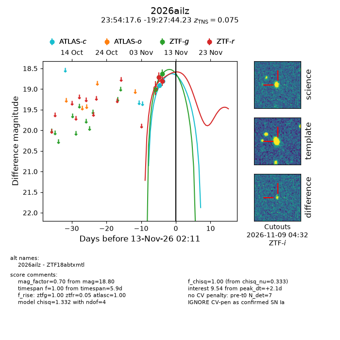
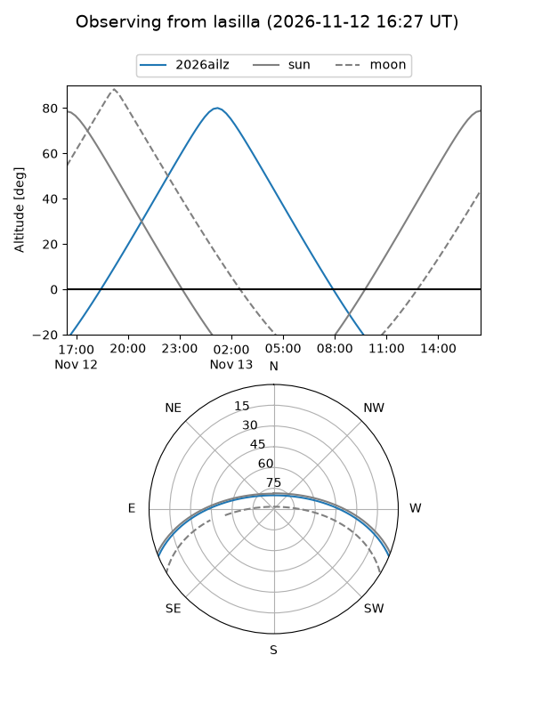
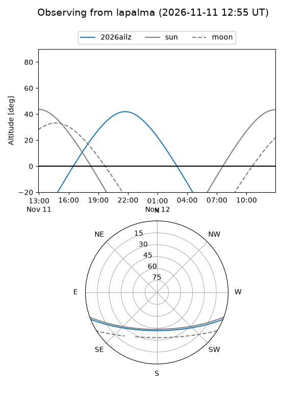
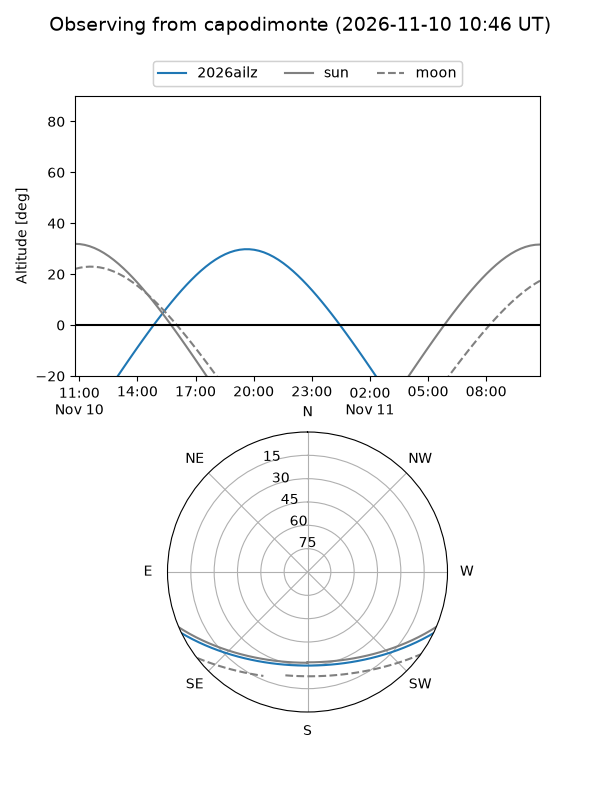
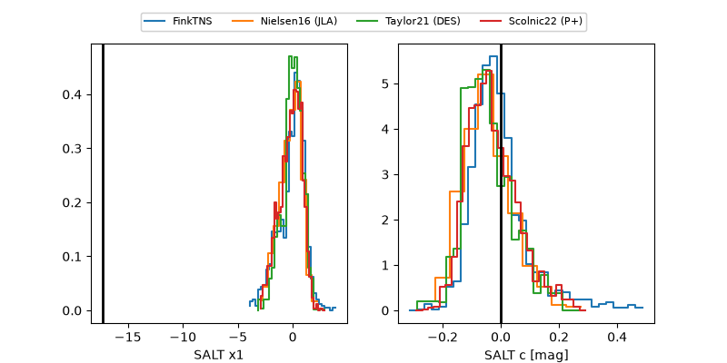

2026ailz
Target 2026ailz at 2026-11-13 02:12
Aliases and brokers:
FINK-ZTF: ztf.fink-portal.org/ZTF18abtxmtl
Lasair-ZTF: lasair-ztf.lsst.ac.uk/objects/ZTF18abtxmtl
ALeRCE-ZTF: alerce.online/object/ZTF18abtxmtl
YSE-PZ: ziggy.ucolick.org/yse/transient_detail/2026ailz
TNS name: wis-tns.org/object/2026ailz
Direct TNS query: direct search
alt names
ZTF18abtxmtl (ztf,fink_ztf)
2026ailz (tns,yse)
Coordinates:
equatorial (ra, dec) = 358.5733,-19.46229
equatorial (HMS+DMS) = 23:54:17.59,-19:27:44.23
galactic (l, b) = (60.2347,-74.82100)
Flags:
TNS type: SN Ia
TNS redshift: 0.0750
peak dt: +2.1
Photometry:
last atlasc=18.80, ztfg=18.63, ztfr=18.81
2 atlasc, 3 ztfg, 2 ztfr detections
Lightcurve

Visibility



Additional plots
